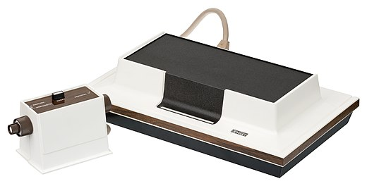
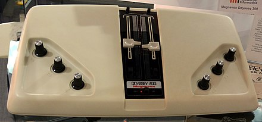
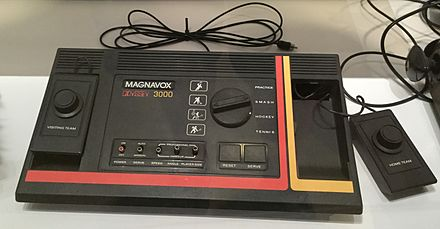
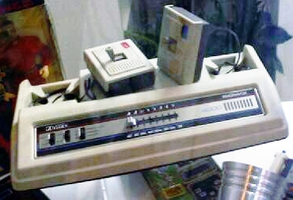
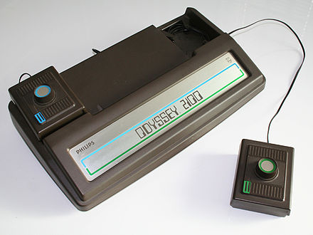

History
The Odyssey series was the main line of the first generation home consoles. Produced by Magnavox and Philips it included the Magnavox Odyssey in 1972 and all the next Odysseys until the Magnavox Odyssey 2 in 1978 which was instead part of the second generation.
Consoles
Magnavox
Magnavox Odyssey

The Magnavox Odyssey has been
presented on May 24th 1972 becoming by this way the first home console ever.
It had cards which were really similar to the subsequent game cartridges of the 2nd generation.
All these ones were dedicated consoles so they included a predefined number of games.
This one included a lot of different games but had a really bad market trend due to various reasons.
Its cost was of 100$ + 25$ for the Shooting Gallery.
Odyssey 100

The Odyssey 100 was launched in 1975 and Magnavox wanted to structured so that
they could easly add features to it, but they didn't manage to do it because of Texas Instruments
chips delay. The console foresaw Tennis and Hockey games where Tennis was simply a modified Pong.
None of these displayed the score yet, but there was the possibility to power the console with eletricity.
Its cost was of $69.95.
Odyssey 200
The Odysseys 200 was released in 1975 and consisted of an evolution of the previous one. It featured a new game called "Smash" and the possibility, for the first time to choose to play with four or two players. It also provided a displayed scorer thanks to a rectangle moving on to the right to add points. Everything else from the previous Odyssey was mantained and its cost was of 109.95$.
Odyssey 300

The Odyssey 300 had a totally different structure from the previous one, satistfying the
initial desires of the series, in order to compete with Coleco Telstar.
It appeared on the market in 1976 featured the same games as the previous version but added
three different difficulty levels :Principiant, Intermediate and Expert.
Its cost was of 69$.
Odyssey 400
The Odyssey 400 was not really different from the previous one and it came in 1976.
This was basically the same as Odyssey 200 but with the digital displayed score
and the automatic service.
Its cost was of 100$.
Odyssey 500
The Odyssey 500 was yet another evolution of the preceding console adding simple stylized icons
representing the players (removing the old vertical lines) adjusting to each game (playing Tennis it would have had
a racket in the hand and so on).
Out on the market in 1976.
Odyssey 2000

The Odyssey 2000 was available since 1977 and was exactly the same as
Odyssey 300 but instead of three paddles it had only a rotating one. It also added a single
player practice mode for Smash.
Odyssey 3000

The Odyssey 3000 appeared on the market in 1977 and added lots of features.
To the previous four games nothing changed apart from the service and the reset
(which could now be done thanks to their buttons). The design was totally different, the paddles were removable
and the games were selectable thanks to a simple wheel.
Odyssey 4000
The Odyssey 4000 was the last one produced by Magnavox and was launched in 1977. It featured 8 different types of the previous four games and had removable joystick.
Odyssey 5000
The Odyssey 5000 was simply a project that never really arrived to the market. Magnavox wanted to change everything but this was simply not the right way.
Philips
Philips used to sell his own version of the Magnavox Odyssey paying rights to them until they bought it. They used to sell in Europe what was in America as for Odyssey 200.
Philips Odyssey 200

The Philips Odyssey 200 arrived in Europe in 1976 and was exactly the same console as the Odyssey 200.

Philips Odyssey 2000
The Philips Odyssey 2000 was a bad version of the one sold in America. In fact it didn't include the power supply and the paddles were the same as Odyssey 300.
Philips Odyssey 2001
The Philips Odyssey 2001 was the Odyssey 4000 appearing in 1977 with the usual paddles and the sound unified with the televisor.
Philips Odyssey 2100
The Philips Odyssey 2100 came out in 1978 and offered lots of possible way to play multiple games: Wipe-Out, Flipper, Handball, Ice Hockey and the old Tennis and Football.